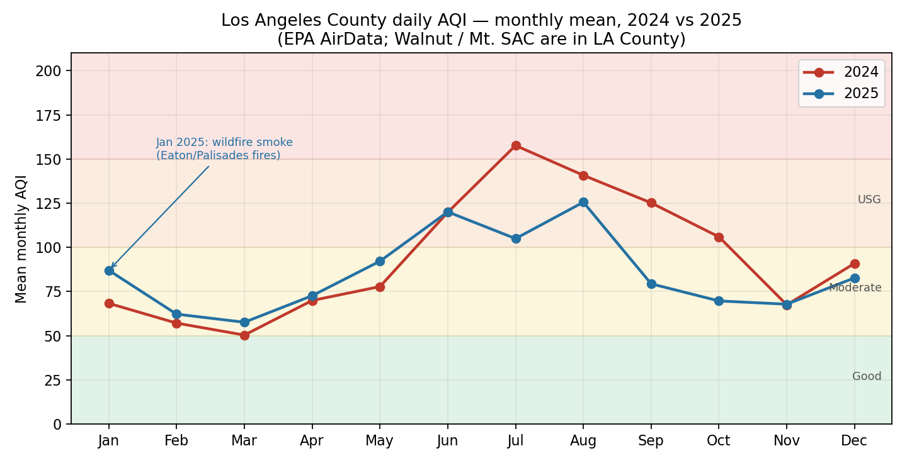

The Air Here
Air Quality Index (AQI) data for our region, from the U.S. EPA's AirData daily county files. The honest headline: the air improved in 2025, and it still isn't good. In Los Angeles County, only about 1 day in 10 rated "Good" in either year.

Monthly average AQI, Los Angeles County, 2024 vs 2025. Source: EPA AirData, daily AQI by county.
Why It Matters, SDG 13
Our project answers the United Nations' Sustainable Development Goal 13: Climate Action - "take urgent action to combat climate change and its impacts." The targets we work on:
- 13.1, Strengthen resilience to climate-related hazards in all countries.
- 13.2, Integrate climate change measures into policies, strategies, and planning.
- 13.3, Improve education and awareness on climate mitigation and adaptation.
Target 13.3 is this website. Targets 13.1 and 13.2 are the meetings, comments, and votes in the Watch List and Take Action sections below. Local action is how a global goal gets done.
Local Initiatives Already Moving
You don't have to start from zero, here's what's already in motion around us. Back these, show up for them, and hold them to their promises:
- Mt. SAC Climate Action Plan, the college's formal plan, with a carbon-neutrality commitment signed in 2014 and a seat in the UN's Race to Zero campaign.
- 6.75 MW solar + battery project, going in over Parking Lots B and F. You can watch the campus decarbonize from the parking lot.
- People, Planet, Prosperity Partnership Committee, the campus committee that runs the sustainability work. Students can get involved.
- AWorld, the app built in support of the UN's ActNow campaign. Our group is registered on AWorld and tracks its footprint and progress there, come journey with us.
Allies & Organizers, Nobody Fights Alone
Clean air in the San Gabriel Valley isn't a new idea, and it isn't ours alone. These are the people already doing the work around us, follow them, show up to what they run, and lend them your voice when they ask. Every handle below links out.
Right here, Walnut & Mt. SAC
- E.A.G.L.E. Club (@mtsac_eagle) - Mt. SAC's environmental club, on our own campus. Next meeting: Thursday, November 12, 6:45–8:00 PM, Building 7, Room 1209. The fastest ally we have is a hallway away.
- Associated Students Environmental Action Committee, student government's environmental arm; coordinates Earth Week. Student voice, official channel.
- Climate Commitment & Environmental Justice Committee, Mt. SAC's governance committee advising the President's Advisory Council on climate. This is where campus policy actually gets written.
- South Coast AQMD (@southcoastaqmd) - the air district itself is headquartered in Diamond Bar, minutes from campus. Its board meetings and rule comment periods are open to the public, that's our house, and we can walk in.
The fights next door
- Clean Air Coalition of North Whittier & Avocado Heights (@cleanaircoalition), neighbors in Hacienda Heights, Avocado Heights, and La Puente fighting the Quemetco battery-recycling plant in the City of Industry, some of them about 400 feet from its fence line. They run community air monitoring and publish comment templates anyone can use. See the Watch List below for the appeal.
- No Data Centers SGV Coalition (@nodatacentersgv), a San Gabriel Valley coalition that won a permanent data-center ban in Monterey Park (Measure NDC, ~86% of the vote) plus moratoria in El Monte, Montebello, and Baldwin Park. Same fight as our Watch List, already winning.
- ActiveSGV (@activesgv) - the SGV's own climate and transportation nonprofit: safer bike routes, better buses, tree plantings with TreePeople, and the GoSGV e-bike program. Their events calendar is a standing invitation, rides, plantings, and crop swaps across the valley, including Pomona.
The warehouse belt, east of us
- CCAEJ (@ccaej_), the Center for Community Action and Environmental Justice in Jurupa Valley, fighting warehouse growth across the Inland Empire. Their "Region in Crisis 2.0" report counts 55M+ square feet of warehouses added since 2023, with 125M more pending. That's the freight system our air sits downwind of.
- People's Collective for Environmental Justice (@pc4ej), San Bernardino organizers working the freight and warehouse front line, including the Bloomington warehouse fight.
- Warehouse Worker Resource Center (@warehouseworkers), based in Ontario, standing up for the people who work inside the warehouses: quotas, heat, legal aid. Many Mt. SAC students work those shifts. Their fight is worker rights first, and it is the same buildings.
- TreePeople, tree planting and care across LA County, including 800 shade trees in El Monte, often alongside ActiveSGV. Our "plant something" rung has a calendar.
- Sunrise Movement LA (@sunrisemvmtla) and SoCal 350 (@socal.350), the metro-LA youth climate movement and the local 350.org affiliate. Bigger stages, same sky.
The gap we're running against
The City of Walnut has no climate action plan. Walnut opted out of the San Gabriel Valley's regional energy planning process back in 2012, and no standalone plan has followed. Next door, Diamond Bar adopted its Climate Action Plan 2040 in 2019, with measurable per-capita emissions targets. And LA County's OurCounty plan (updated 2025) commits to carbon neutrality by 2045 and an 80% cut in toxic emissions in disadvantaged communities - including unincorporated Hacienda Heights, Rowland Heights, Avocado Heights, and La Puente, all around us. Walnut is the hole in the map. Naming that, politely and repeatedly, is a campaign.
The Watch List
New data centers, warehouses, and factories mean more truck trips, more backup generators, and more emissions, and they're approved in planning meetings most people never hear about, with public comment windows that can be just a few weeks long.
They count on nobody showing up. So we show up. Public comments are entered into the official record and counted. Turnout is the one metric that can't be ignored.
This page tracks proposals in Walnut, Diamond Bar, the City of Industry, and nearby communities as they appear, what's proposed, where, the comment deadline, and how to comment. We watch the City of Walnut, Diamond Bar, and Industry planning agendas, CEQA notices, and South Coast AQMD comment periods. No open comment windows are listed right now, check back, and follow @CleanAirWalnut so a deadline never slips past you.
Now on the board
- Quemetco / Ecobat, City of Industry. The valley's longest-running clean-air fight: a lead battery-recycling plant on 7th Avenue, operating since 1959, with homes in Avocado Heights about 400 feet away. Its state hazardous-waste permits were granted in November 2025 - then stayed while neighbors appeal. A joint appeal hearing is tentatively set for January 27–28, 2027. Lead and arsenic are toxic pollutants, not CO2, but this is the clean-air fight closest to home, and the Clean Air Coalition has carried it for years. Dates can move: confirm on official portals before mobilizing.
- Warehouses & the WAIRE rule. South Coast AQMD's Warehouse Indirect Source Rule (Rule 2305, "WAIRE") covers roughly 4,000 warehouses of 100,000+ square feet, charging operators points or mitigation fees against NOx and diesel-particle emissions. It has collected $71.4 million in mitigation fees as of February 2026, money that funds cleaner trucks and charging in the neighborhoods that breathe the freight.
- Data centers & battery storage, City of Industry. Industry's planning commission has recommended allowing data centers citywide (final council action pending), and the 400 MW Marici battery-storage project on Gale Avenue moved forward in early 2026 over community objection, the No Data Centers SGV Coalition is organizing the legal challenge. A proposal at Puente Hills Mall (two warehouses plus a 10 MW data center) was filed in January 2026 and had not been approved as of late October. This is the category to watch.
- AB 617, and the gap around us. California's community air-protection program runs deep monitoring and cleanup plans in six South Coast communities, the nearest are East LA / Boyle Heights to the west and San Bernardino / Muscoy to the east. Walnut and the SGV are not designated, which is itself a fact worth knowing: our air gets no dedicated program. AQMD's Clean Community School Initiative is one door in for schools in consistently nominated areas.
Take Action, It Starts With You
The ladder runs light to heavy. Start on any rung; climb when you're ready.
- Take the pledge, one week, three actions (below).
- Share the ride, carpool, bus, or bike one day a week.
- Cut one energy habit, lights, AC, vampire plugs.
- One meatless meal a week, small plate, real footprint.
- Track it in AWorld, the ActNow app; see your own numbers move.
- Plant something, a plant, a tree, a garden box. Green that stays.
- Comment, file a public comment on a Watch List proposal.
- Show up, a planning commission or city council meeting.
- Vote, local elections pick the councils and commissions that approve facilities.
What does your commute cost the air?
Estimates based on the U.S. EPA figure of ~0.404 kg CO2 per mile for a typical passenger vehicle; carpool splits it per person, transit is a per-passenger estimate.
The 1-Week Pledge
One week: share one ride, cut one energy habit, eat one meatless meal. That's the whole pledge.
Campus Poll, Vote With a Tap
This week's question: if you could change ONE thing about getting to campus, what would it be? Every vote re-draws the bars, live. We post the running tally every Monday in the Walnut Air Report.
Demo poll: votes are tallied on this device for our class demonstration. The group collects the real campus totals from the poster QR and our social polls each Monday.
About This Project
Clean Air Walnut is a BIOL-6 group project at Mt. San Antonio College by Group 1 - Jianming Gao, Jared, Gabby, and Joshua, promoting CO2 reduction and climate-change mitigation in Walnut, on the Mt. SAC campus, and in surrounding areas.
Follow along: @CleanAirWalnut on Instagram and TikTok, including the Walnut Air Report, our weekly AQI check-in. Started from the bottom, now we're clear (air). Working on it.